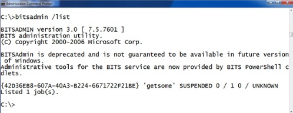

This one is easier to find. The BITSADMIN tool also lets you view scheduled downloads. You can get a list of scheduled task with the command “BITSADMIN /LIST”

Here you can see there is a job called “getsome” that is currently scheduled on this machine. "BITSADMIN /LISTFILES <jobname>" takes a scheduled job as a parameter and returns a list of URLs the job is scheduled to download. For example, here we see that job “getsome” is scheduled to download from the url HTTP://attackerssite.com/malware.exe and it will save the file as c: empmalware.exe.

But how does the malware execute after it is downloaded? BITS will allow you to schedule a command to execute after a successful download to notify you that the job is finished. The intention is that you can execute a program and have it send you an email or fire an alert in a network monitoring system. Let’s check the notification program on this program with BITSADMIN /GETNOTIFYCMDLINE <jobname>. To use it provide the job name as an argument like this:

Here you can see that after the malware is successfully downloaded to c: empmalware.exe the BITS service will launch c: empmalware.exe “to notify the administrator”.